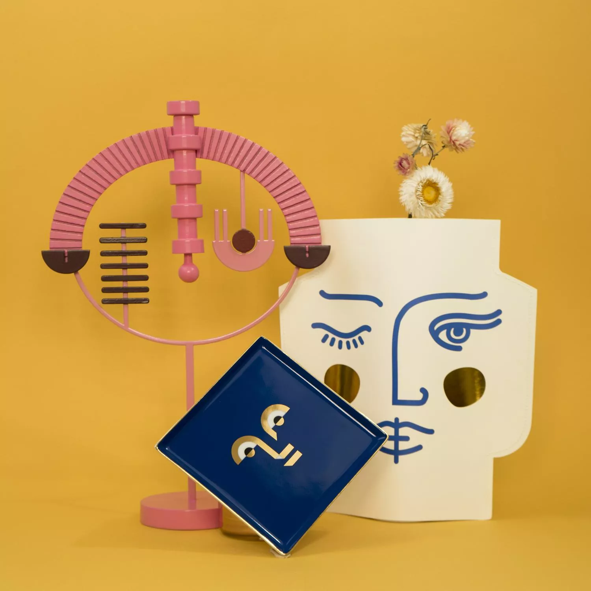
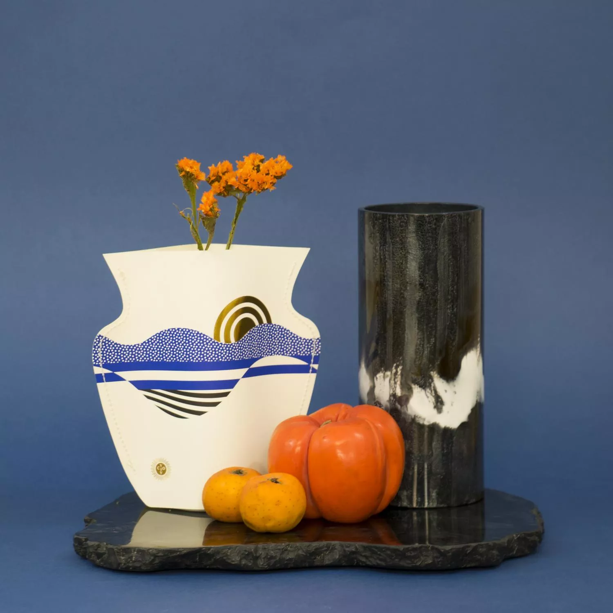
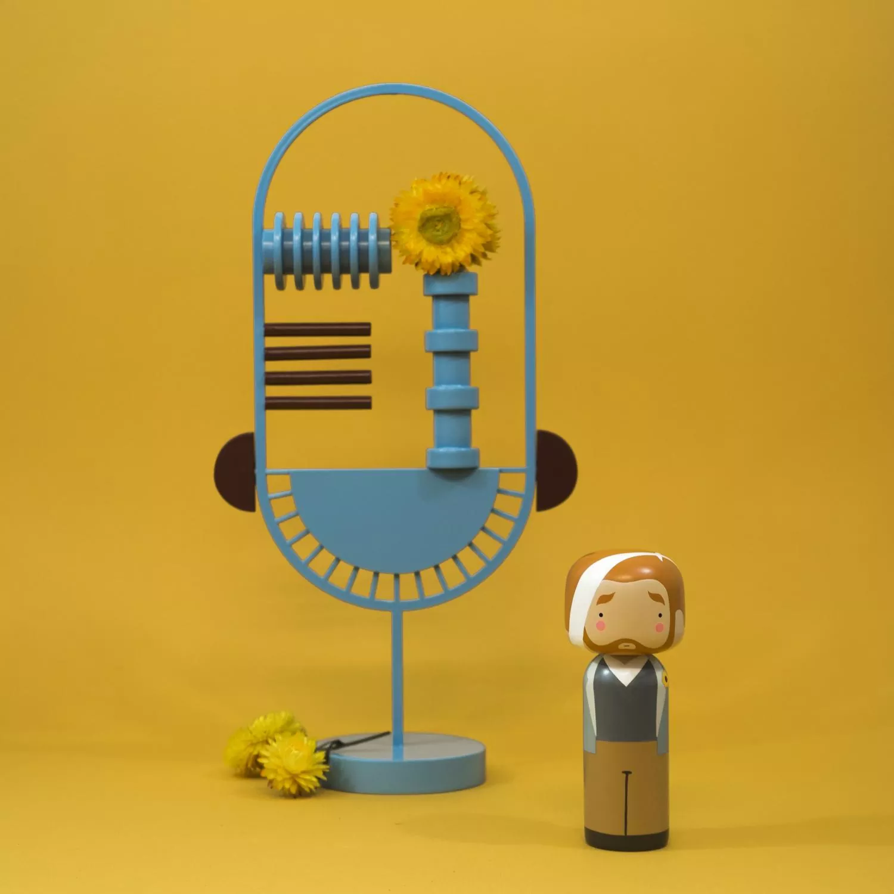
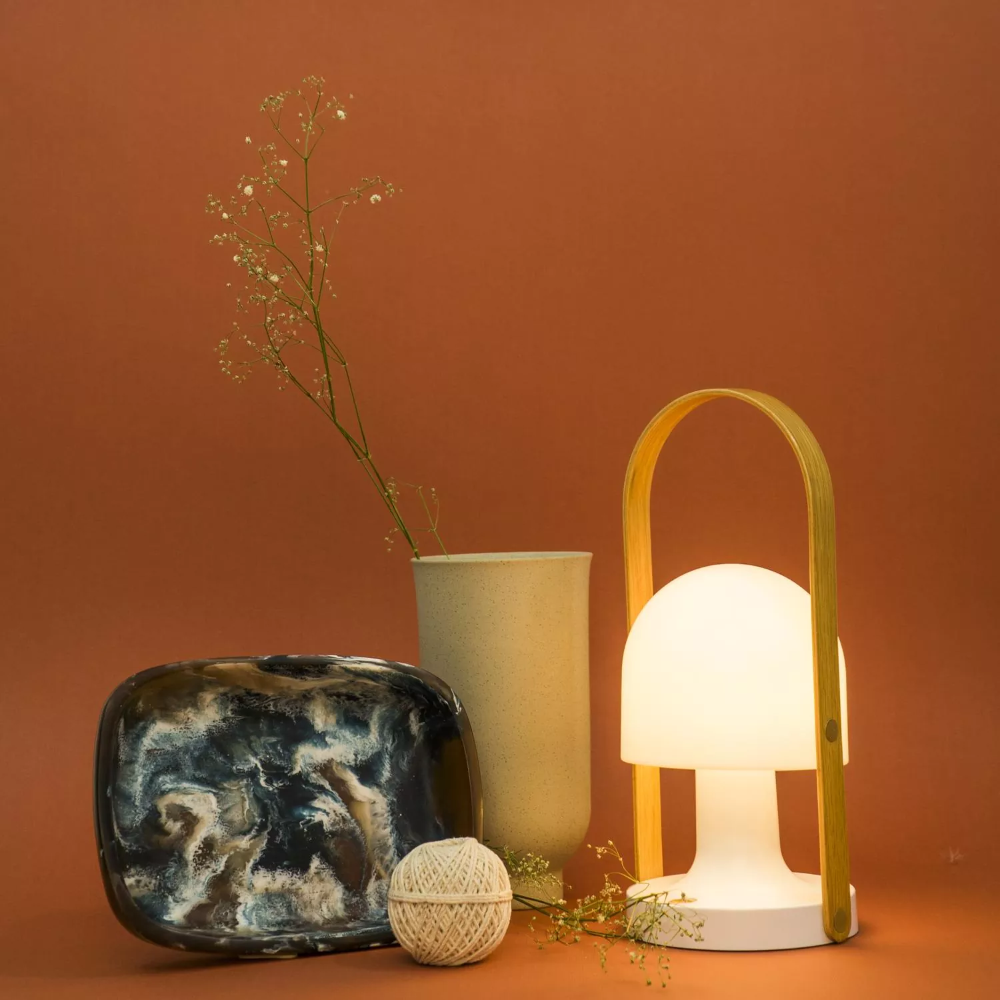
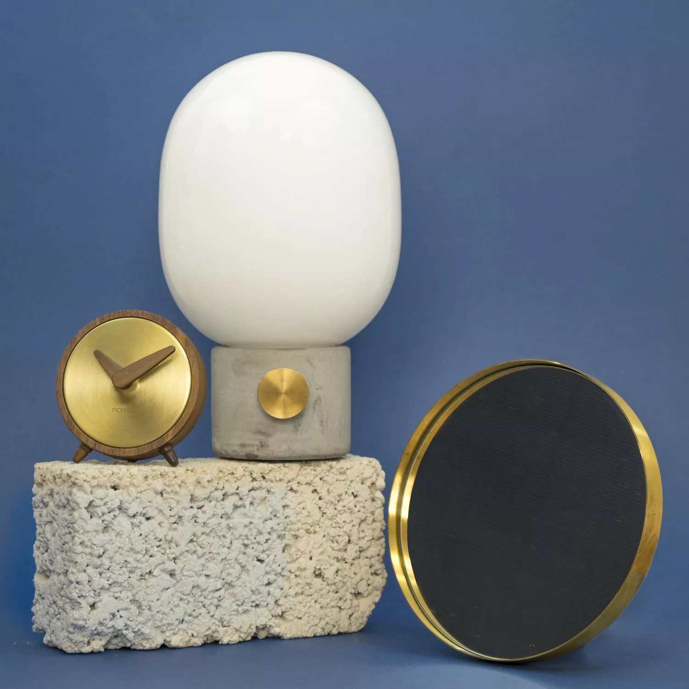
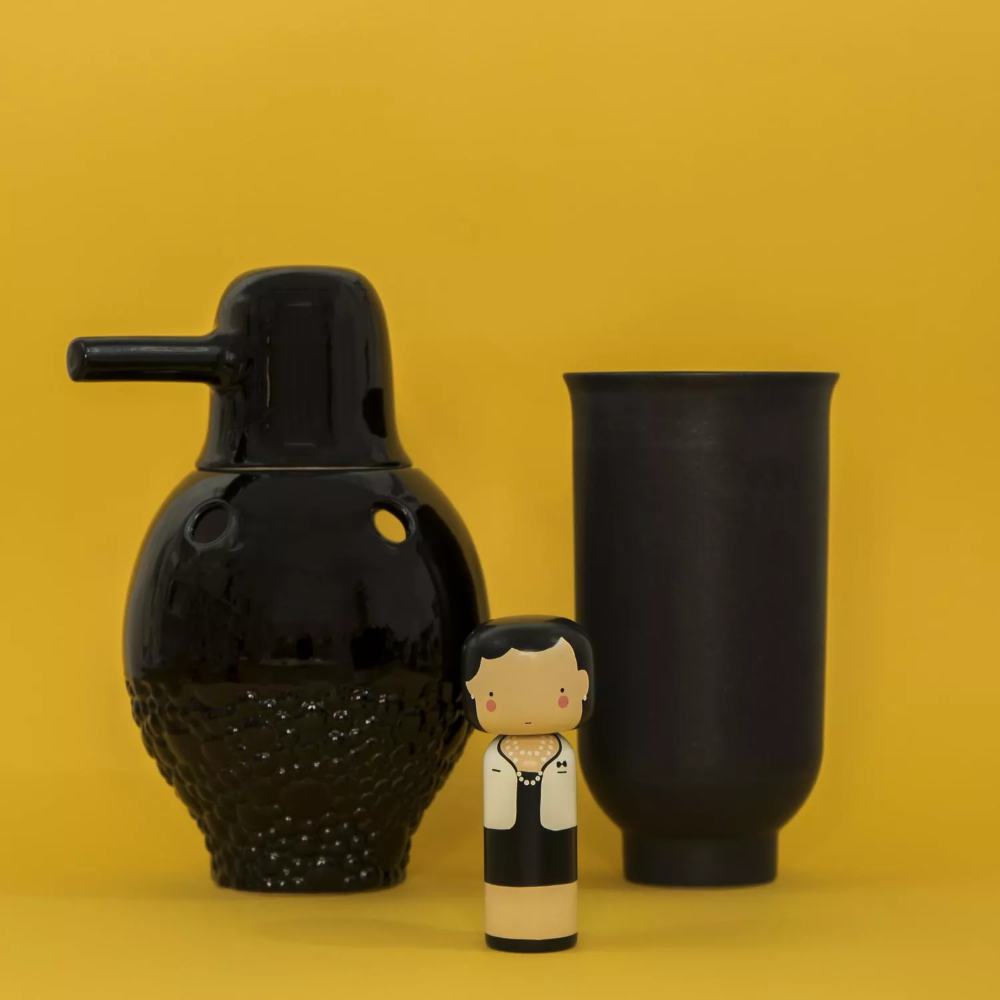
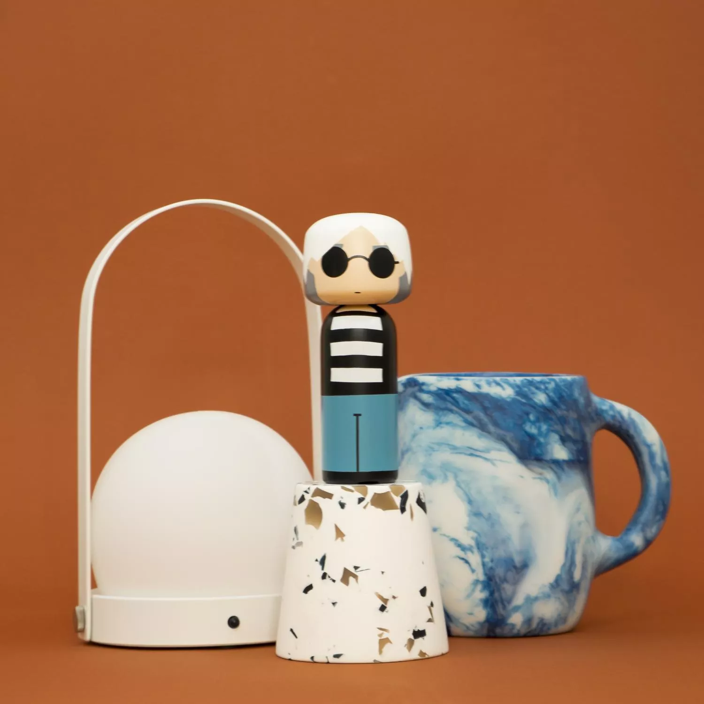
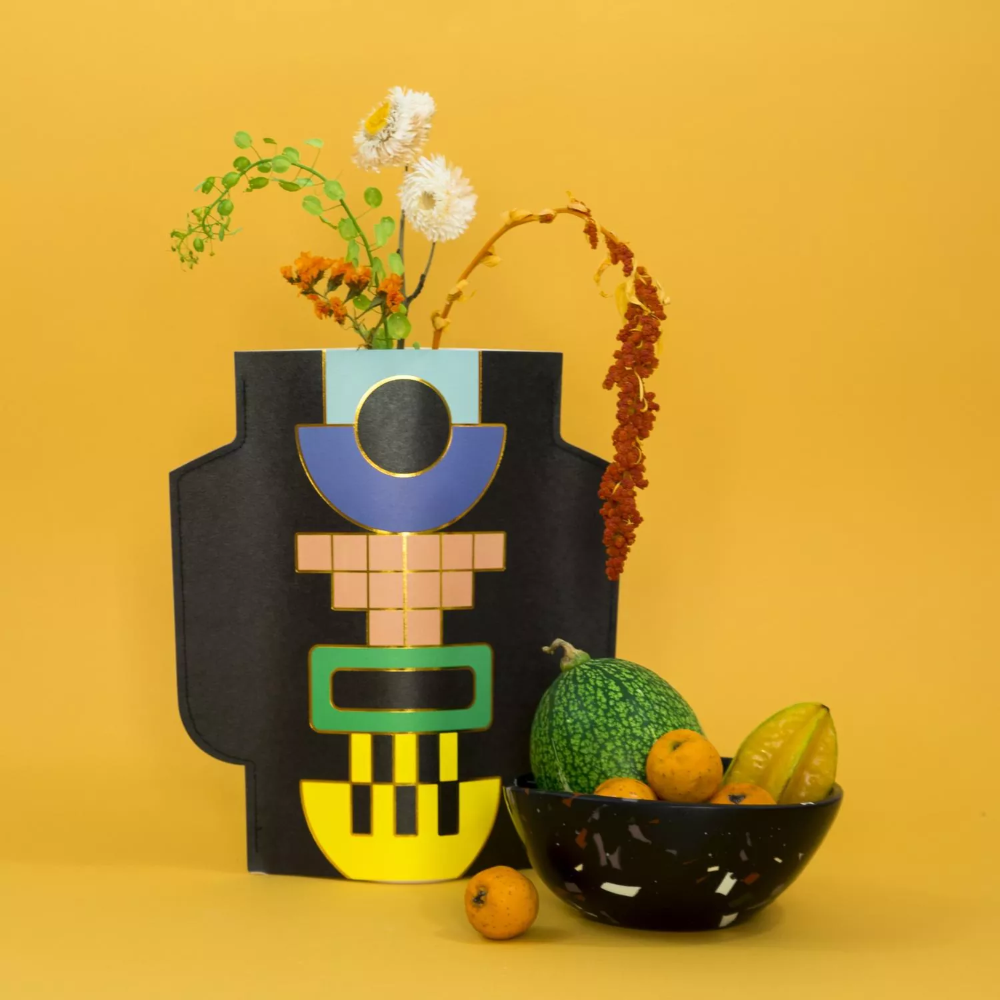

Photography · Art direction
Still lifes for the 2020 season
A product-photography series created for Addrede’s seasonal collection.
The series was created to present a new collection of objects on social media through a recognisable visual language. I developed compositions based on colour, texture and everyday ingredients, using fruit and simple materials to place the products in vivid, slightly surreal still lifes.
Role
Concept, art direction, photography and image editing.
Tools
Digital photography, Adobe Photoshop and Lightroom.
Result
A cohesive set of campaign images designed for the brand’s Instagram communication.







